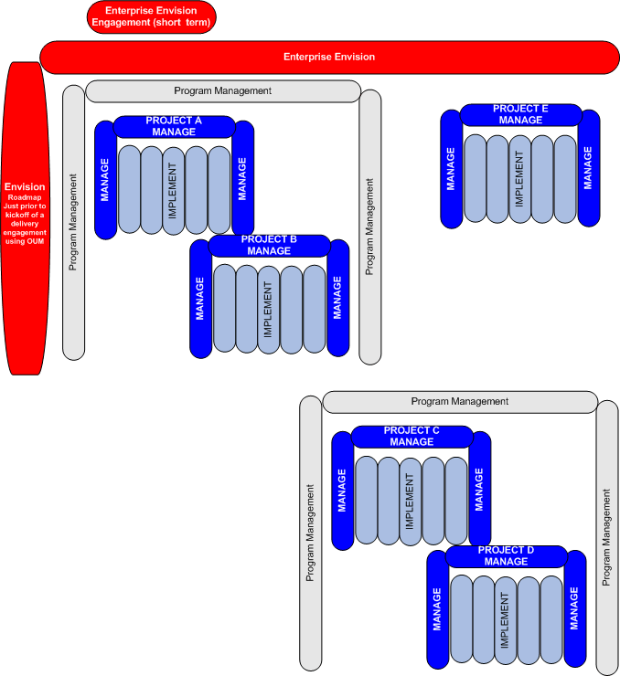

OUM |
Focus Area Overview |
||
Method Navigation |
Current Page Navigation |
||
|
|
||||||||
Envision comprises the areas of the Oracle Unified Method framework that deal with development and maintenance of enterprise level IT strategy, architecture, and governance. Ideally, every enterprise should be executing these or similar processes. Every project that effects a corporation's IT landscape should have its origins here.
The goals for Envision are to:
Indeed, one of the goals of OUM is to provide the methodological basis for the delivery of any IT related service. Envision extends OUM's capabilities beyond delivery and management of software implementation projects into the realm of IT vision and strategy. Like many of aspects of OUM, it is not likely that all of Envision's processes and tasks will be executed within any single enterprise, nor is it likely that Envision will ever contain an exhaustive set of enterprise level processes. Rather, Envision should serve as a framework that can be scaled to suit the needs of a particular enterprise.
Envision is focused on information technology related business architecture and practices. The following is a list of the objectives of Envision:
The diagram below shows how Envision relates to the other focus areas of the Oracle Unified Method. The diagram reflects the influence that Envision work has on OUM delivery and management of OUM implementation projects (Implement focus area). Envision work may precede one or more IT Projects. Envision need not end when an OUM delivery project starts, but spans the whole project lifecycle of current and future IT projects instead. The following picture illustrates the ongoing nature of Envision:

In future releases, Envision will become more complete and better integrated with the rest of the OUM framework. We will establish a stronger symbiosis between Envision tasks and the OUM delivery tasks that are being executed to realize specific portions of the enterprise strategy. In general, any service that is focused at the enterprise level or on strategic business objectives should be based on some combination of Envision tasks.
Envision currently has two phases:

During Initiate, you perform a set of foundational tasks. Those tasks have a broad range of objectives and applicability. At one end, delivering a service based on the Envision Roadmap process can establish the vision for one or more projects intended to realize a focused set of business objectives (e.g., Roadmap to SOA). On the other end, Initiate phase processes can be used to establish a broad set of enterprise level IT processes that are continued in the Maintain and Evolve phase.
The processes and tasks of the Maintain and Evolve phase bring the work begun during Initiate into the day to day life of the enterprise. This phase forms the foundation for governing and managing enterprise level business processes and strategies. Envision is not intended to be a broad treatise on corporate strategic planning. It is focused on information technology related business architecture and practices. Some enterprises may adopt these processes in whole or part. They should also form the basis for defining service offerings. At the very least, they are intended to provide architects and practitioners with an evolving set of leading practices around Enterprise Business Analysis, Enterprise Architecture, IT Strategy, and IT Portfolio Management.
Finally, Initiate-based services or sets of tasks may also be performed periodically. These may be required to develop further detail on specific objectives or to respond to critical business needs or pain points that bubble up out of Maintain and Evolve tasks.
One of the key concepts in understanding the Envision focus area is to see the relationship between an Envision project and how any subsequent implementation projects make use of the artifacts from an Envision based project.
Envision projects produce the following types of artifacts:
The implementation projects in return provide:
One other key concept is that Envision Projects are done at the Enterprise level, but do not always look at the entire enterprise at once. In some cases, proof of concept is done to test a particular recommendation or strategy, and at the same time, solve a particular business problem for an area within the Enterprise.
The overall organization of OUM is expressed by a process-based system engineering methodology.
A process is a cohesive set or thread of related tasks that align to a specific project objective. A process results in one or more key outputs. Each process is a discipline that usually involves similar skills to perform the tasks within the process. You might think of a process as a simultaneous sub-project or workflow within a larger development project.
This section describes the key OUM Envision processes.
The Envision Roadmap process accelerates project implementations by focusing on the key strategic and tactical areas that must be addressed in order to maximize the Enterprise's return on investment, while minimizing the business risk in order to successfully complete a project.
The Enterprise Business Analysis process provides analysis of the enterprise-level requirements and sets up the business boundaries of the OUM project. It produces a set of requirements models of the enterprise, such as enterprise process models, domain models and use case models.
The Organizational Change Management process starts at the strategic level with executives and then identifies the particular human and organizational challenges of the technology implementation in order to design a systematic, time-sensitive, and cost-effective approach to lowering risk that is tailored to each organization’s specific needs. In addition to increasing user adoption rates, carefully planning for and managing change in this way allows organization’s to maintain productivity through often-difficult technological transitions. This in turn enables the organization to more easily meet deadlines, realize business objectives, and maximize return on investment.
Enterprise Architecture covers an enterprise-level view on both the application and technical architecture of the systems.
IT Portfolio Management covers a ‘holistic’ view of the overall IT strategy of the enterprise. Its main purpose is to validate that IT projects are aligned with the corporate strategy by maximizing the investment in IT projects while minimizing the risks.
In the Governance process you review the organization’s strategies and objectives and affirm that the IT related objectives and strategies fit within those of the organization. A well-defined Governance process should validate that the IT investments are aligned with the business strategies throughout the enterprise, and mitigate associated risks.
Envision tasks are further refined into activities to better represent the Envision lifecycle.
As part of OUM, Envision also uses the Unified Process (UP). UP is an iterative and incremental approach to developing and implementing software systems. Therefore, any activity (and its tasks) may be iterated. Whether or not to iterate, as well as the number of iterations (times the activity is repeated) within an increment, are variable. Activities may be iterated to either increase the quality of the activity or task outputs to a desired level, to add sufficient level of detail, or to refine and expand them on the basis of user feedback.
Within the Envision phases, the following major activities have been identified:
OUM uses the Manage focus area. You should read the Manage focus area overview to gain a better understanding of this focus area.

Copyright © 2006, 2016, Oracle and/or its affiliates. All rights reserved.